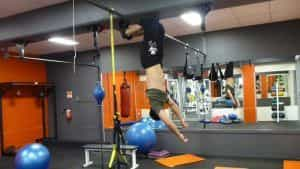

Summer may be over by now, but there’s still a lot of opportunity for you to show off the physique that you’ve been developing throughout the rest of the year—maybe even into the winter months.
While I for one have always felt that resistance training should always be functional—which is to say training your body to be functionally strong and able, rather than merely training to look good—the fact is that if you strength-train, you’ll get aesthetic appeal as a side benefit, whereas the dandy who trains purely to look good will not be nearly as strong.
Like it or not, we are sexually reproducing beings (well, most of us are anyway). A man with a good physique is more likely to achieve his sex goals then a doughy, deconditioned man, and the torso, particularly the stomach, is a major source of sexual judgment—for both men and women.
Hard to be attracted to this
Seeing as that is the case, let us make the most of it and do some exercises for the abs that will give you far greater size and definition than the crunches you learn in most commercial gyms.
1. The Inverted Sit-Up
If you’ve been doing your power lifts, you’ll likely have halfway decent abs due to their use as stabilizer muscles in those total body maneuvers. Thus, your average crunches and sit-ups are not going to be hard enough for you. Of course, you could just increase your repetitions, but seeing as I and many other men find endless repetitions to be a bit boring, a much better thing to do is to increase the intensity.
Thus, the inverted sit-up might be right for you. Often seen in movies, the exerciser grabs a hold of the nearest horizontal bar, swings his legs up and around it, and lets his body hang vertically. From there he does sit-ups, moving his chest and torso as close as possible to his thighs.

2. The V-Sit Up
Slightly harder than the inverted sit-up, the V-Sit up is not only a difficult exercise but also a prerequisite to doing more advanced gymnastic maneuvers like the V-Sit and (God help us) the Manna.
To do the V-Sit up, lay down on the floor on your back and stretch out your arms and legs as far as they can comfortably go. Then sit up with both your arms and legs, using your hips as an axis and forming a body shape that resembles the letter “V”.
Be sure to make sure to bring your arms and legs back down COMPLETELY to the floor, as many people can be tempted to cheat by not lowering their arms fully and thus making the exercise easier
3. The Abdominal Vacuum
The vacuum is quick, as easy or difficult as you want it to be, and requires absolutely no equipment at all. To do this exercise, stand up as straight as you can, and place the hands on your hips. Take a deep breath while simultaneously “sucking in” the abdominal muscles—imagine that you are trying to touch your bellybutton to your spine.
Then exhale while simultaneously continuing to suck in your abdomen, Once you have completely breathed out, relax. If you put a finger on your abdomen, you’ll feel them flexing.
4. Single Leg Front Lever Alternations
If you’ll remember my front lever article, you probably know how difficult this gymnastic fundamental is. But the static pose will train the entire body for maximal strength.
However, if you want to train the abdomen specifically, there is a variation of it you can do. Assume the single leg front lever as seen below
Then, at whatever pace you want, retract that leg and extend the opposite leg, keeping the back and torso straight. Then alternate until exhaustion. If that becomes too easy for you, then you can try starting out in the tuck lever, and then extending both legs simultaneously.
No matter which of these exercises you choose, you’ll work your abs harder than any conventional exerciser, and be the talk of the gym.
Read More: How To Complete The Front Lever Maneuver